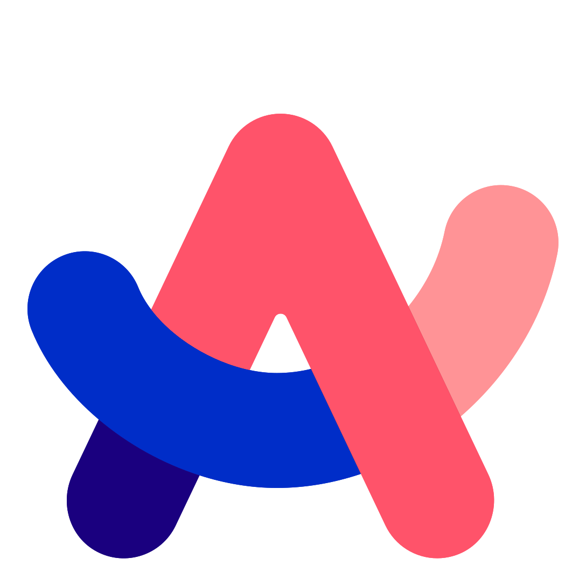

index.html
index.html
The rc Browser
Welcome to My Genius Website about the Arc Browser.
The Arc Browser is a browser made by a company called "The Browser Company". It has a Mac, Windows, iPhone, and Android(beta) version.
This website is designed to resemble Arc on Windows. Use the sidebar/navbar to navigate. Almost everything you see in the gray area is clickable, so see what everything does!
↕️
The small rectangles on the top are called "favorite" sites.
In Arc, users put their most used sites in that section.
In this website, "favorite" tabs are the most important pages.
↖️
The long rectangles on the top left are called "pinned" sites.
In Arc, users put their other commonly used sites in that section.
In this website, "pinned" tabs are other important pages.
⬅️
The long rectangles under the new tab button are temporary tabs.
In Arc, users put their temporary tabs there, and the tabs are automatically cleared out.
In this website, other useful pages are put here.
⬅️